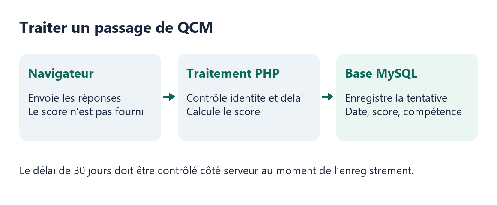

Comprendre le cours
Partir du besoin et traduire les règles
Écris les acteurs, leurs droits, les besoins et les contraintes. Le cahier des charges du projet impose PHP, MySQL, HTML/CSS et PDO avec des requêtes préparées.
Fais une matrice action par rôle. Écris ensuite l’état attendu après chaque action, par exemple dépôt « en attente » puis « validé » ou « refusé » avec une décision traçable.

Concevoir les relations et les contraintes
Sépare utilisateurs, compétences, formations, QCM, questions, propositions, tentatives et dépôts. Les tables d’association évitent de stocker plusieurs identifiants en texte dans une seule colonne.
Une clé primaire identifie une ligne. Une contrainte unique sur la paire formation-compétence évite de lier deux fois les mêmes éléments. Ajoute des données de test qui exercent chaque cardinalité.
Séparer le traitement PHP, l’accès PDO et l’affichage
Centralise la connexion PDO, stocke les paramètres de connexion hors de la partie publique et active la gestion des erreurs par exceptions. Présente une erreur lisible à l’utilisateur et conserve le détail côté serveur.
Pour la vue, utilise htmlspecialchars($texte, ENT_QUOTES, 'UTF-8') en contexte de texte HTML. Pour les formulaires sensibles, vérifie également un jeton anti-CSRF côté serveur.
Authentifier un utilisateur et contrôler ses actions
Crée le hachage avec password_hash() et contrôle avec password_verify(). Lors d’une connexion réussie, régénère l’identifiant avec session_regenerate_id(true). Les comptes en attente restent bloqués.
Vérifie les droits pour chaque requête. Dans le tableau de bord, filtrer les liens améliore la navigation. Sur l’URL de traitement, vérifier le rôle et la ressource protège l’action, y compris si l’URL est saisie directement.
Gérer les tentatives, les fichiers et les tableaux de bord
Pour les volets formations et questions, lie chaque création à son auteur. Filtre les formations par compétence via l’association et limite les réponses au formateur destinataire. Pour compter les vues, décide si tu comptes les ouvertures ou les visiteurs distincts et affiche la période.
Pour un dépôt, détecte le type côté serveur, impose une taille maximale, génère un nom et stocke hors du dossier servi si possible. Autorise le téléchargement par un traitement qui vérifie l’accès.
Sigles et acronymes
- CSRF · Cross-Site Request Forgery
- Requête indésirable envoyée avec la session d’un utilisateur.
Exemple. Un jeton côté serveur aide à protéger le formulaire qui change une adresse e-mail. - CSS · Cascading Style Sheets
- Feuilles de style d’une page Web.
Exemple. Une règle CSS peut mettre un titre en bleu et espacer les paragraphes. - HTML · HyperText Markup Language
- Langage de balisage d’une page Web.
Exemple. Une balise de titre structure un chapitre de la page. - PDO · PHP Data Objects
- Interface PHP d’accès aux bases de données.
Exemple. Le formulaire lie un identifiant dans une requête préparée avec PDO. - PHP · PHP: Hypertext Preprocessor
- Langage exécuté côté serveur.
Exemple. Le serveur utilise PHP pour lire un formulaire puis produire la réponse. - SQL · Structured Query Language
- Langage de requête pour une base relationnelle.
Exemple. SELECT permet de lire les titres des films d’une catégorie. - URL · Uniform Resource Locator
- Adresse qui indique où trouver une ressource.
Exemple. Une URL HTTPS indique notamment le serveur et le chemin d’une page. - UTF-8 · Unicode Transformation Format, 8-bit
- Encodage Unicode à longueur variable.
Exemple. En UTF-8, le fichier garde correctement les accents.
Du cours aux TD et TP
Le document original des vingt volets est téléchargeable. Les questions reprennent les livrables du projet, avec des exemples de tests sur des comptes fictifs.
Questions TD & TP
Volets 1 à 3 · Modéliser les liens et éprouver la base
Énoncé reformulé. Produire le modèle conceptuel, le modèle logique et le jeu de test de la base MySQL.
- Décris les relations avec des cardinalités, puis crée les tables référencées avant les tables qui les référencent. Pour l’association, utilise une paire de clés et une contrainte unique ou une clé primaire composée.
- Ajoute deux formations et deux compétences. Insère trois liens, dont deux pour la même formation. Vérifie la lecture par jointure.
- Essaie un identifiant inexistant et un doublon. Présente les erreurs attendues, puis ajoute des comptes fictifs avec des états et rôles différents pour tester le reste du projet.
Volets 4 à 7 et 17 · Tester connexion, validation et accès par rôle
Énoncé reformulé. Vérifier la connexion après validation du compte, les accès par rôle et la réinitialisation du mot de passe.
- Insère des comptes fictifs avec des hachages. Teste secret erroné, compte en attente et compte actif. Valide le compte avec le rôle administrateur.
- En étudiant, tente une route formateur via son URL et une requête visant un dépôt d’un autre utilisateur. Vérifie le refus et l’absence de modification en base.
- Pour la réinitialisation, autorise seulement l’action admin, impose un secret temporaire ou un jeton à durée limitée selon l’implémentation, et prévois un changement au premier accès. Ne journalise aucun secret.
Volets 8 à 10 · Corriger un QCM et appliquer le délai de trente jours
Énoncé reformulé. Corriger le QCM, enregistrer date et score et refuser une tentative pour la même compétence avant trente jours.
- Recherche la tentative la plus récente par étudiant et compétence, triée par date décroissante. Choisis une convention de fuseau horaire stable.
- Au POST, relis l’état, filtre les propositions réellement liées aux questions et recalcule le score. Si plusieurs requêtes peuvent arriver, sérialise le contrôle et l’insertion avec une transaction et un verrou sur une ligne stable pour ce couple.
- Teste premier passage, tentative anticipée, date limite et autre compétence. Vérifie que la page Compétences et le tableau de bord reflètent la tentative enregistrée.
Volets 11 à 20 · Déposer un projet, filtrer une formation et vérifier la recette
Énoncé reformulé. Vérifier la chaîne dépôt-validation, les formations et questions, puis préparer le tableau de recette.
- Crée un dépôt fictif et teste ensuite une extension trompeuse, un fichier trop gros et un téléchargement demandé par un utilisateur non autorisé. Confirme le changement d’état et le retour vers l’étudiant.
- Crée une formation PDF avec deux compétences. Vérifie le filtre, le compteur de vues selon la convention choisie et l’acheminement d’une question vers le formateur. Teste le passage d’une question ouverte à une question traitée.
- Prépare un tableau attendu/obtenu avec inscription, validation, connexion, rôles, QCM à la limite, fichier refusé, dépôt validé, formation et réponse. Ajoute au moins un test d’injection, d’échappement et d’accès direct à la route.